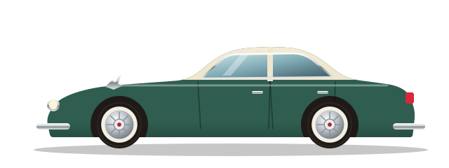
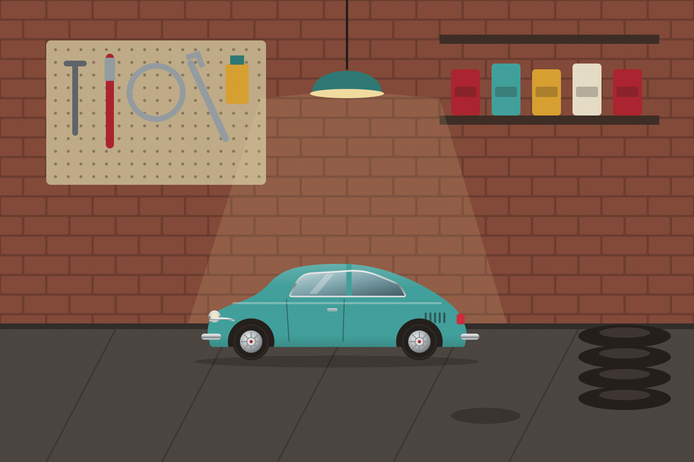
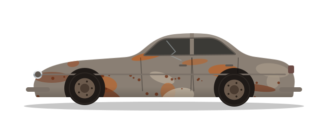

Ретро Гаражкласичні авто без пилу
Я повертаю до життя «Запорожці», «Волги» й «Москвичі», збираю моделі світової класики та розповідаю історії машин, на яких їздили наші дідусі.

Три машини, з яких усе почалося

Дванадцять квадратних метрів щастя
Мій гараж — це цегляний бокс на околиці Вінниці, де пахне бензином, кавою та старою шкірою сидінь. Тут є яма, верстак, перфопанель з інструментами й полиця з моделями, на яку я дивлюся, коли щось не виходить.
Колекція складається з реальних машин, які я відновлюю сам або з друзями, і масштабних моделей світових легенд, на справжні версії яких я поки збираю. Кожна має історію — і я записую їх на цьому сайті.
Хто я такийТри десятиліття автомобільного стилю
Хром і плавники п'ятдесятих, сміливі експерименти шістдесятих і практичність сімдесятих.
«Волга» 1962 року: фінішна пряма
Кузов пофарбовано, двигун зібрано. Лишилися хромовані деталі, проводка і перший виїзд на ретро-фестиваль у Вінниці.

Так вона виглядала в день купівлі
Плакати й сцени з гаража
«Стара машина — це не залізо. Це капсула часу, яку можна завести ключем»— Максим Вознюк, власник гаража